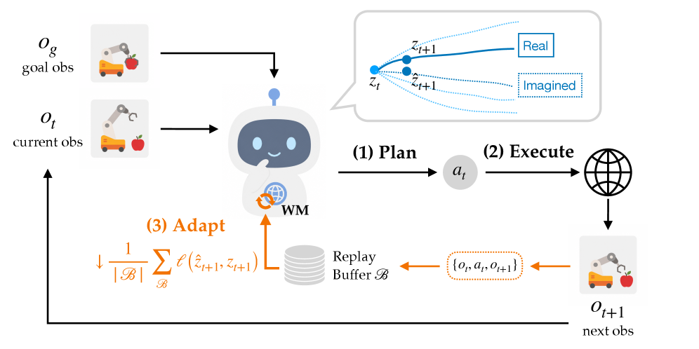

Why it matters왜 중요한가
A world model's error is not a static quantity — it is a quantity you can measure for free, at every single step, just by comparing what you imagined to what actually happened.
월드 모델의 오차는 정적인 양이 아니다 — 상상한 것과 실제로 일어난 것을 비교하기만 하면, 매 스텝마다 공짜로 측정할 수 있는 양이다.
The failure mode this paper attacks is specifically nasty because it is invisible from inside the planner. MPC minimizes ‖ẑ − zg‖² over imagined rollouts. If the predictor is miscalibrated, the planner still converges beautifully — to an action sequence that looks perfect in latent imagination and does nothing in the real world. And because MPC rolls forward H steps, a small one-step error compounds. Test-time distribution shift is where this bites: visual corruption misaligns the encoder, changed mass or damping misaligns the predictor, and either one is enough.
이 논문이 겨냥하는 실패 양상이 특히 고약한 이유는 플래너 내부에서는 보이지 않기 때문이다. MPC는 상상된 롤아웃 위에서 ‖ẑ − zg‖²를 최소화한다. 예측기가 어긋나 있어도 플래너는 여전히 아름답게 수렴한다 — 잠재 상상 속에서는 완벽해 보이지만 실제 세계에서는 아무것도 하지 않는 행동 시퀀스로. 게다가 MPC는 H 스텝을 앞으로 굴리므로, 작은 1스텝 오차가 복리로 불어난다. 테스트타임 분포 이동에서 이것이 물어뜯는다: 시각적 손상은 인코더를, 질량이나 감쇠 변화는 예측기를 어긋나게 하고, 둘 중 하나만으로 충분하다.
The literature had both halves of the answer and never joined them. Test-time training/adaptation (TTT/TTA) exists, but mostly for classification and mostly as a one-shot pass over test inputs. Adaptive control and online model-based RL update models while acting, but typically couple that to policy or value learning, or require a target-domain fine-tuning set, or a separate exploration phase. What was missing is the trivially available thing in between: a goal-conditioned MPC agent is continuously generating its own supervised transitions, and a JEPA already ships with the exact loss that consumes them. AdaJEPA is what you get when you notice that.
문헌에는 답의 두 조각이 다 있었지만 한 번도 붙지 않았다. 테스트타임 학습/적응(TTT/TTA)은 존재하지만, 대개 분류 문제용이고 대개 테스트 입력에 대한 일회성 패스다. 적응 제어와 온라인 model-based RL은 행동하면서 모델을 갱신하지만, 보통 정책·가치 학습과 결합되거나, 타깃 도메인 파인튜닝 데이터를 요구하거나, 별도의 탐색 단계를 요구한다. 빠져 있던 것은 그 사이에 자명하게 놓여 있던 것이다: 목표 조건 MPC 에이전트는 스스로 지도 학습용 전이를 끊임없이 생성하고 있고, JEPA에는 그것을 소비할 손실이 이미 들어 있다. AdaJEPA는 그 사실을 알아챘을 때 나오는 물건이다.

By the numbers핵심 숫자
Where adaptation actually pays적응이 실제로 값을 하는 곳
| Setting | Frozen | predlast+enclast | predfirst+enclast |
|---|---|---|---|
| default dynamics · GD | 82.7 ± 6.8 | 83.3 ± 6.6 ↑0.7 | 84.0 ± 1.6 ↑1.3 |
| low mass (×0.2) · GD | 77.3 ± 8.2 | 80.0 ± 3.3 ↑2.7 | 82.0 ± 1.6 ↑4.7 |
| high damping (×20) · GD | 77.3 ± 5.0 | 77.3 ± 10.5 | 78.7 ± 4.7 ↑1.3 |
| unseen layouts · GD | 53.3 ± 8.2 | 66.0 ± 7.1 ↑12.7 | 78.7 ± 5.0 ↑25.3 |
| unseen layouts · CEM | 49.3 ± 6.2 | 55.3 ± 5.0 ↑6.0 | 70.7 ± 3.8 ↑21.3 |
In one diagram한 장의 그림
Three design choices that make it free이것을 공짜로 만드는 세 가지 설계 선택
The label was already there
ℒada(ℬ) = (1/|ℬ|) Σ ℓ( fθ(zi, ℰa(ai)), sg(zi+1) ). This is equation (4), and it is equation (2) — the pretraining objective — with a different data source. That identity is the whole reason there is no reward model, no demonstrations, and no risk of optimizing a proxy: the agent is graded on the one thing it is actually being asked to do, predict the next latent. The stop-gradient carries over as the anti-collapse stabilizer; the authors report that removing it while updating only the last layers for one step gives similar planning performance, which is a good sign that the restricted update is itself doing the regularizing.
ℒada(ℬ) = (1/|ℬ|) Σ ℓ( fθ(zi, ℰa(ai)), sg(zi+1) ). 이것은 식 (4)이고, 동시에 사전학습 목적함수인 식 (2)이며, 다른 것은 데이터 출처뿐이다. 이 동일성이야말로 보상 모델도, 시연도, 대리 목표를 최적화할 위험도 없는 이유다: 에이전트는 실제로 요구받은 단 하나 — 다음 잠재 상태 예측 — 로만 채점된다. stop-gradient는 붕괴 방지 장치로 그대로 이어진다. 저자들은 마지막 층만 한 스텝 갱신하는 조건에서 그것을 빼도 계획 성능이 비슷하다고 보고하는데, 제한된 갱신 자체가 정칙화 역할을 한다는 좋은 신호다.
One step, two layers, five samples
Ω defaults to the predictor's last transformer block (including its final LayerNorm) plus the encoder's last stage — a Linear–GELU–Linear–LayerNorm projection head. One gradient step, at the training learning rates (ηpred = 5e-4, ηenc = 1e-5), over a recent-5 buffer. The ablation is unusually reassuring: every variant beats frozen, including LoRA (rank 8, α=16) and including no buffer at all. On the seen shape T, buffer choice moves success only within 81–87%; the frozen baseline sits at 50%. The method is not living on a hyperparameter cliff.
Ω의 기본값은 예측기의 마지막 트랜스포머 블록(최종 LayerNorm 포함)과 인코더의 마지막 스테이지 — Linear–GELU–Linear–LayerNorm 사영 헤드 — 다. 최근 5개 버퍼 위에서, 학습 때 쓰던 학습률(ηpred = 5e-4, ηenc = 1e-5)로 기울기 한 스텝. 절제 실험이 유난히 안심을 준다: LoRA(rank 8, α=16)를 포함해, 심지어 버퍼가 아예 없는 경우까지, 모든 변형이 동결 모델을 이긴다. 학습 모양 T에서 버퍼 선택은 성공률을 81–87% 안에서만 움직이고, 동결 기준선은 50%에 앉아 있다. 이 방법은 하이퍼파라미터 절벽 위에 살고 있지 않다.
Per-episode, deliberately
Each episode starts from the same pretrained model and keeps its own copy and its own buffer. This is a real design decision, not an oversight — it makes adaptation trivially safe (a bad episode cannot poison the next one) and it is why the in-distribution result is "does no harm" rather than "slowly drifts". But it also fixes the ceiling: AdaJEPA is recalibration, not learning. The visualization section confirms this from the other side — decode an adapted rollout and an unseen red block still comes out gray, an unseen shape still decodes to the nearest training shape. The latent manifold does not move; only the aim does.
각 에피소드는 동일한 사전학습 모델에서 시작해 자기만의 복사본과 자기만의 버퍼를 유지한다. 이것은 실수가 아니라 실제 설계 결정이다 — 적응을 자명하게 안전하게 만들고(나쁜 에피소드가 다음 에피소드를 오염시킬 수 없다), 분포 내 결과가 "천천히 표류한다"가 아니라 "해를 끼치지 않는다"인 이유다. 하지만 동시에 상한선을 못 박는다: AdaJEPA는 재보정이지 학습이 아니다. 시각화 절이 반대편에서 이를 확인해 준다 — 적응된 롤아웃을 디코딩하면 처음 보는 빨간 블록은 여전히 회색으로 나오고, 처음 보는 모양은 여전히 가장 가까운 학습 모양으로 디코딩된다. 잠재 다양체는 움직이지 않는다. 조준만 움직인다.
How it works어떻게 작동하나
- Pretrain a perfectly ordinary JEPA. 완전히 평범한 JEPA를 사전학습한다. ResNet encoder → global latent, transformer predictor, frameskip 5, history window 3, stop-gradient on the target branch plus curvature regularization to straighten latent trajectories. Trained on reward-free offline trajectories. Nothing about this stage is modified — which is exactly why the method drops onto DINO-WM unchanged.ResNet 인코더 → 전역 잠재, 트랜스포머 예측기, frameskip 5, 히스토리 창 3, 타깃 브랜치 stop-gradient에 잠재 궤적을 곧게 펴는 곡률 정칙화. 보상 없는 오프라인 궤적으로 학습. 이 단계는 하나도 바뀌지 않는다 — 그래서 이 방법이 DINO-WM 위에 그대로 얹힌다.
- Plan with what you have. 가진 것으로 계획한다. Receding-horizon MPC minimizes Σk αk·‖ẑt+k − zg‖² over a 25-step subplanner horizon, solved either by Adam on the actions (100 steps, lr 0.1, zero init) or CEM (200 samples, 10 iterations). Execute the first 5-action chunk.후퇴 지평선 MPC가 25스텝 서브플래너 지평선에서 Σk αk·‖ẑt+k − zg‖²를 최소화한다. 행동에 대한 Adam(100 스텝, lr 0.1, 0 초기화) 또는 CEM(샘플 200개, 10회 반복)으로 푼다. 첫 5개 행동 청크를 실행한다.
- Bank the transition. 전이를 적립한다. Append (ot, at, ot+1) to buffer ℬ and trim to N. Two policies were tried —
recent-N(sliding window, the default) andhard-N(keep the N highest-error transitions). recent-5 wins on stability, not on peak: on the unseen square shape,hard-5scores 35.3% and an unbounded buffer 44.0% against recent-5's 41.3%.(ot, at, ot+1)을 버퍼 ℬ에 넣고 N개로 자른다. 두 정책을 시도했다 —recent-N(슬라이딩 창, 기본값)과hard-N(오차가 가장 큰 N개 유지). recent-5가 이기는 것은 안정성이지 최고점이 아니다: 미공개 square 모양에서hard-5는 35.3%, 무제한 버퍼는 44.0%로, recent-5의 41.3%보다 높다. - Take the step, then immediately reuse the model. 스텝을 밟고, 즉시 그 모델을 다시 쓴다. Ω ← Ω − η∇Ωℒada(ℬ), U times (U = 1 by default). The updated model is used for the very next planning problem — there is no waiting, no batching across episodes. Loop until goal or step cap.Ω ← Ω − η∇Ωℒada(ℬ)를 U번(기본 U = 1). 갱신된 모델은 바로 다음 계획 문제에 쓰인다 — 기다림도, 에피소드 간 배치도 없다. 목표 도달 또는 스텝 상한까지 반복.
What to take away그래서, 가져갈 것
If you are running JEPA + MPC and freezing the model, you are leaving points on the table for ~0.02 s per replan. The claim to actually trust is Table 2: three different implementations (global vs. spatial features, different objectives, including DINO-WM), all in-distribution, all improved, +0.7 to +7.3 points. That is the number to budget against — the doubling headlines come from OOD settings the authors constructed.
JEPA + MPC를 돌리면서 모델을 동결하고 있다면, 재계획당 ~0.02초에 점수를 그냥 흘리고 있는 것이다. 실제로 믿을 주장은 Table 2다: 서로 다른 구현 3종(전역 vs. 공간 특징, 다른 목적함수, DINO-WM 포함), 전부 분포 내, 전부 개선, +0.7 ~ +7.3점. 예산을 잡을 숫자는 이것이다 — 두 배가 되었다는 헤드라인은 저자들이 구성한 OOD 설정에서 나온다.
The adaptation target should follow where the shift enters. Predictor-only updates suffice for shape shifts (the pretrained representation already generalizes across geometry) but fail on visual and layout shifts, where the mismatch enters through the representation. And predfirst beating predlast by 12.7 points on layouts is a genuinely useful diagnostic: the predictor's first block sits closest to the latent and action inputs, so it is where new transition structure gets recalibrated.
적응 대상은 이동이 들어오는 지점을 따라가야 한다. 모양 이동에는 예측기만 갱신해도 충분하지만(사전학습 표현이 이미 기하학을 넘어 일반화한다), 시각·레이아웃 이동에서는 불일치가 표현을 통해 들어오므로 실패한다. 그리고 레이아웃에서 predfirst가 predlast를 12.7점 앞선 것은 진짜로 쓸모 있는 진단이다: 예측기의 첫 블록이 잠재·행동 입력에 가장 가까이 있으므로, 새로운 전이 구조가 재보정되는 자리다.
Test-time adaptation and data scaling are substitutes at the low end and complements at the high end. The heatmap is the paper's most quotable result: an adapted model trained on one shape with 1k trajectories hits 60.8% on seen shapes, beating the frozen model trained on four shapes × 16k (54.0%) — 64× the data. But at the top of the grid adaptation still adds ~27 points, so it is not merely a data substitute. Also note the orthogonal finding: at a fixed 16k budget, spreading across four shapes beats concentrating on one (51.9% vs. 45.8% unseen, adapted). Diversity > volume.
테스트타임 적응과 데이터 스케일링은 저데이터 구간에서는 대체재, 고데이터 구간에서는 보완재다. 히트맵이 이 논문에서 가장 인용할 만한 결과다: 한 모양·1k 궤적으로 학습한 적응 모델이 학습 모양에서 60.8%를 찍어, 네 모양 × 16k(54.0%)로 학습한 동결 모델 — 64배 데이터 — 을 이긴다. 하지만 격자 맨 위에서도 적응은 여전히 ~27점을 더하므로, 단순한 데이터 대체재는 아니다. 직교하는 발견도 함께 보라: 총 16k 예산을 고정했을 때, 네 모양에 분산하는 쪽이 하나에 몰아주는 쪽을 이긴다(미공개 모양 적응 후 51.9% vs. 45.8%). 다양성 > 물량.
predfirst+enclast, which is not the paper's stated default and which the authors themselves concede was picked per-environment ("the best adaptation target is environment-dependent"). The default configuration buys +12.7 there. And there is no baseline that isolates why it works: no comparison against simply giving the frozen model more replanning steps, a larger CEM sample budget, or test-time augmentation — all of which also spend compute at deployment. Given that a single gradient step on 5 samples improves an in-distribution model by 7.3 points, at least part of this may be plain overfitting-to-the-current-episode rather than shift correction, and the paper never separates the two.
⚠️ 한 줄 비판적 시선: 헤드라인 이득과 믿을 만한 이득은 같은 이득이 아니다. 모든 OOD 숫자는 저자들이 자기 사전학습 체크포인트 위에 직접 구성한 이동(블러, 소금-후추, 색 변경, 질량 ×0.2, 감쇠 ×20)에서 나오고, 남의 월드 모델에 대한 유일한 평가 — Table 2의 DINO-WM — 는 +2.0(GD)과 +3.3(CEM)을 준다. 더 나쁜 것은, 가장 크게 광고된 승리인 미공개 레이아웃 +25.3이 논문이 명시한 기본값이 아닌 predfirst+enclast에서 나오고, 저자들 스스로 이것이 환경별로 골라진 것임을 인정한다("최적 적응 대상은 환경 의존적이다"). 기본 설정이 거기서 사주는 것은 +12.7이다. 그리고 왜 작동하는지를 분리하는 기준선이 없다: 동결 모델에 재계획 스텝을 더 주거나, CEM 샘플 예산을 늘리거나, 테스트타임 증강을 쓰는 것 — 모두 배포 시점에 연산을 쓰는 방법들 — 과의 비교가 하나도 없다. 샘플 5개에 대한 기울기 한 스텝이 분포 내 모델을 7.3점 올린다는 사실을 감안하면, 이 중 일부는 이동 보정이 아니라 그냥 현재 에피소드에 대한 과적합일 수 있는데, 논문은 둘을 끝내 분리하지 않는다.